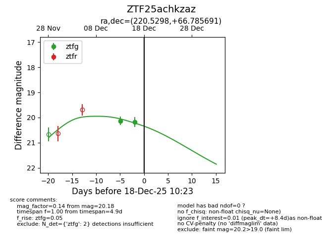
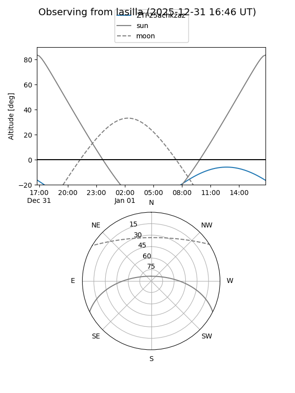
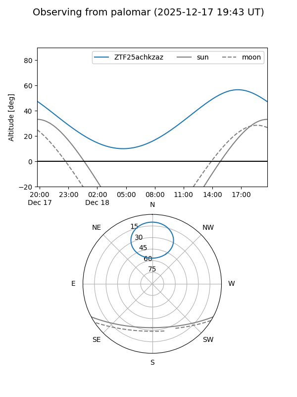
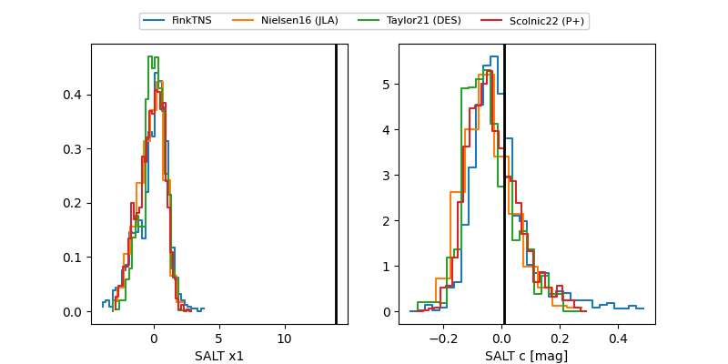

ZTF25achkzaz
Target ZTF25achkzaz at 2025-12-24 16:17
Aliases and brokers:
FINK: fink-portal.org/ZTF25achkzaz
Lasair: lasair-ztf.lsst.ac.uk/objects/ZTF25achkzaz
ALeRCE: alerce.online/object/ZTF25achkzaz
alt names
ZTF25achkzaz (ztf,fink_ztf)
Coordinates:
equatorial (ra, dec) = 220.5298,+66.78569
equatorial (HMS+DMS) = 14:42:07.16,+66:47:08.49
galactic (l, b) = (107.4030,+46.86572)
Flags:
Photometry:
last ztfg=20.18
2 ztfg detections
Lightcurve

Visibility


Additional plots
